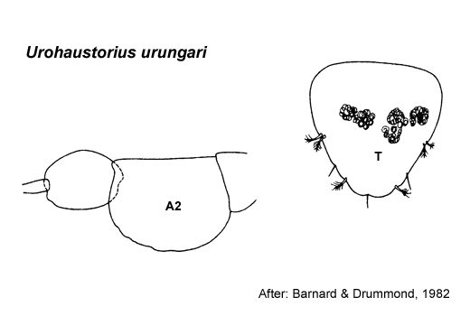

Type Material.Lodged in the NMV.
Description.Antenna 1 peduncular article 1 setal row with some strong robust setae or with only slender setae, proximal pair of setae simple. Antenna 2
peduncular article 4 main setal row with robust and slender setae,
proximal part of row evenly angled; peduncle article 5 bulbous in male.
Mandible right incisor simple; left incisor with 2 extremely weak teeth. Maxilla 1 palp with some setae displaced subapically.
Gnathopod 1 simple; coxa small, triangular, broader but not longer than coxa 2. Gnathopod 2 minutely chelate, propodus palm obtuse. Pereopod 3 coxa large, larger than coxa 4. Pereopod 4 coxa large. Pereopod 5 basis without mediofacial brush of setae; dactylus with robust setae arranged in single row. Male pereonite 6 with blunt transverse process forming a central broad, bilaterally humped ridge. Pereopod 6 dactylus well developed. Pereopod 7 coxa without long posterior spine; dactylus well developed, without robust setae.
Epimeron 2 subequal in size to epimeron 3, posteroventral corner with small spine. Epimeron 3 posteroventral corner with large spine. Uropod 1 inner ramus shorter than outer ramus, not fused to peduncle. Uropod 2 inner ramus shorter than outer ramus, not fused to peduncle. Telson longer than broad, entire.
Distribution.Australia: Moreton Bay, Queensland.

___________________________
This
publication should be cited as: Kilgallen, N.M. & Lowry, J.K. 2008.
Urohaustoriidae (Amphipoda): World Genera and Species. Version 1. 1
January 2008. https://crustacea.net.